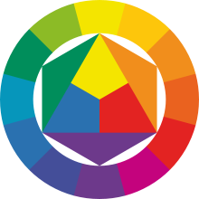

Monitor
前言
用于显示影像及色彩的输出设备。
分类
- 投影式显示器，投影仪
- 立体成像显示器，折射或电机高速转动
- 有机发光二极管显示器，OLED
- 电子纸，电子墨水屏
- 液晶显示器，LCD，按背光源分CCFL显示器(色彩好功耗高)和LED显示器(色彩较差功耗低)两种
- 发光二极管显示器，LED常用于室外显示屏
- 映象管显示器，CRT靠电子束激发屏幕内表面的荧光粉
- 段显示器，七段数码管只能显示字母或数字符号
- 触摸屏，可以接收触头（包括手指或者胶笔头等）等输入信号的感应式显示设备，基于上述显示器
LCD
原理
- 由于光是一种波，具有偏振，波的振动方向位某一固定方向的光叫做“偏振光”，其振动方向叫做“偏振方向”。正常的光波是全方向的，偏振是一个圆形，经过CPL或PL后就只剩下能通过的偏振方向。
- LCD由悬浮于两个透明电极（氧化铟锡）间的一列液晶分子层，两边外侧两个偏振方向互相垂直的偏振过滤片组成。
- 如果没有电极间的液晶，光通过其中一个偏振过滤片其偏振方向将和第二个偏振片完全垂直，但是如果通过一个偏振过滤片的光线偏振方向被液晶旋转，那么它就可以通过另一个偏振过滤
分类
- 透射型液晶显示器：屏幕背后的光源照亮，而观看则在屏幕另一边（前面），如电脑显示器、PDA和手机
- 反射型液晶显示器：由后面的散射的反射面将外部的光反射回来照亮屏幕，功耗非常低，如电子钟表和计算器
- 半穿透反射式液晶显示器：当外部光线很足的时候，该液晶显示器按照反射型工作，而当外部光线不足的时候，它又能当作透射型使用。
分类
- 被动矩阵式：TN-LCD、STN-LCD、DSTN-LCD，
- 主动矩阵式：TFT-LCD
OLED
常用于现在的手机上。有机发光二极管，是一种有机电致发光器件，由比较特殊的有机材料构成，分小分子OLED和高分子OLED（也可称为PLED）比LCD更轻薄、亮度高、功耗低、响应快、清晰度高、柔性好、发光效率高。
原理
- 电子和空穴的注入。
- 电子和空穴的传输。
- 电子和空穴的再结合。
- 激子的退激发光。
分类
- 单层器件也就是在器件的正、负极之间接入一层可以发光的有机层，其结构为衬底/ITO/发光层/阴极。在这种结构中由于电子、空穴注入、传输不平衡，导致器件效率、亮度都较低，器件稳定性差。
- 双层器件是在单层器件的基础上,在发光层两侧加入空穴传输层（HTL）或电子传输层（ETL），克服了单层器件载流子注入不平衡的问题，改善了器件的电压-电流特性，提高了器件的发光效率。
- 三层器件结构是应用最广泛的一种结构，其结构为衬底/ITO/HTL/发光层/ETL/阴极。这种结构的优点是使激子被局限在发光层中，进而提高器件的效率。
- 多层结构的性能是比较好的一种结构，其能够很好的发挥各个层面的作用。发光层也可以由多层结构组成，由于各发机层之间相互独立，可以分别优化。
- 被动式(无源驱动passive matrix，即PM-OLED)：其瞬间亮度与阴极扫瞄列数成正比，需要在高脉冲电流下操作。分辨率较低、成本低廉、制程简单。
- 主动式(有源驱动active matrix，即AM—OLED)：每一个像素皆可连续与独立驱动，并可记忆驱动信号，不需在高脉冲电流下操作。效率较高、寿命延长、成本较昂贵、制程较复杂(仍比TFT-LCD容易)
材料
用手指轻触面板，显现梅花纹的是VA面板，出现水波纹的则是TN面板，若无水纹现象则是硬屏
硬屏
IPS，遇到外力时，硬屏液晶分子结构坚固性和稳定性优于软屏。不会画面失真，影响画面色彩，最大程度地保护画面的效果。S-IPS面板，属于IPS的改良型。
软屏
- VA(vertical alignment)：分为MVA(multi-domain vertical alignment)与PVA(patterned vertical alignment),动态画面时，色彩衔接不太好
- TN(Twisted Nematic)：生产成本低
接口
- HDMI(High Definition Multimedia，高清多媒体接口):不仅能传输高清数字视频信号，还可以同时传输高质量的音频信号。HDMI 2.1
- VGA(Video Graphic Array，即显示绘图阵列):传输的是红、绿、蓝模拟信号以及同步信号，不能同时传输音频信号，支持热插拔。
- DP(DisplayPort):同时传输视频和音频信号,带宽更高，成本更低。可与传统接口（如HDMI和DVI）向后兼容。DP 2.0
- DVI(Digital Visual Interface)：速度快、画面清晰,传输的是数字信号。但是没有发展
- FPD-Link（LVDS）：高速、低噪声和低功耗
参数
- 对比度(Contrast ratio)：一幅图像中明暗区域最亮的白和最暗的黑之间不同亮度层级的测量，差异范围越大代表对比越大，差异范围越小代表对比越小。
- 亮度(Luminance)：发光体光强与光源面积之比
- 分辨率(Screen resolution)：纵横向上的像素点数px
颜色
颜色是眼、脑和我们的生活经验对光的颜色类别描述的视觉感知特征，但人对颜色的感觉不仅仅由光的物理性质所决定，还包含心理等许多因素。
- 饱和度(saturation)：色彩的鲜艳程度，也称作纯度，
- 色相(hue)：即各类色彩的相貌称谓，决定哪一种颜色被使用，如大红、普蓝
- 明度(value):眼睛对光源和物体表面的明暗程度的感觉
用法
- 红绿蓝三原色 (RGB)：多用于发光的媒体，比如电视机
- 青、洋红、黄、黑四元色 (CMYK)：主要用于印刷
- RGBA：主要用于图像的Alpha合成。RGBA是代表Red（红色）Green（绿色）Blue（蓝色）和Alpha。
配色
人与计算机的互动主要基于与图形用户界面元素的交互，而色彩在该交互中起着关键作用。
基于色环的配色
色环（Color Wheel），又称色轮、色圈，是将可见光区域的颜色以圆环来表示，为色彩学的一个工具，一个基本色环通常包括12种不同的颜色。

单色配色
每种色彩取自相同的基色,在色彩的深浅、明暗或饱和度上有所调整而形成明暗的层次关系
相近色配色
相互不冲突的的相关色彩(临近色)，一种色彩用作主色，而其它色彩用于丰富该方案。6：3：1规则能更好地平衡颜色。
互补色配色
互补色是色环上两个正对立的颜色。对比强烈，可以用来吸引观众的注意力。
自定义配色
最简单的方法是将明亮的主色添加到一堆中性色中
-------------文章到此已结束发现错误请指正-------------